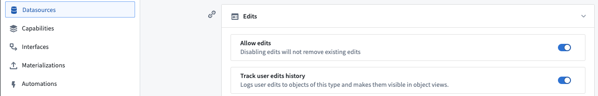
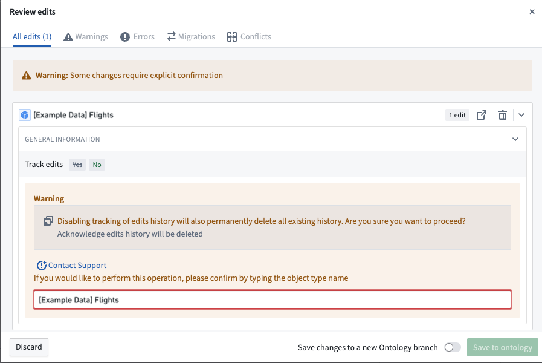

Tracking the history of user edits to objects indexed into Object Storage v2. Enable or disable this feature using the Track user edit history toggle in the Datasources tab of the Ontology Manager, as shown in the screenshot below.

To allow user edits, the Edits toggle must be enabled.
:::callout{theme="neutral"} Edit history records every edit to an object, regardless of how the edit was made. To capture the decision behind an edit instead, including the parameter values a user submitted and the context at the time of submission, enable action log on the action type. :::
preserve edit history is checked during the migration if you want to retain the edit history.After enabling Track user edit history, the Edit History widget can be added to Workshop modules or Workshop-backed object views to display edit histories.
Disabling Track user edit history permanently deletes all existing edit histories for this object type. Before saving the ontology, users will receive a warning and must confirm an acknowledgment that edit history will be deleted.
